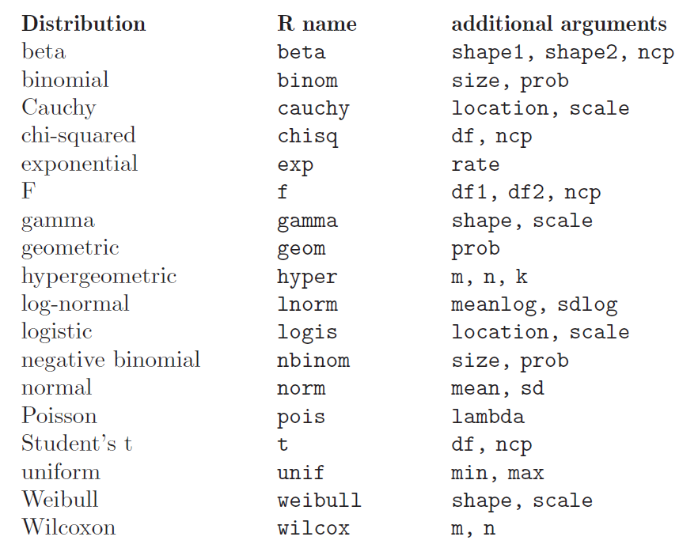

Statistical Treatment
R contains a very comprehensive library with statistical functions, including the most common probability distributions:
{kind=link}
Associated Functions
There are several functions associated to every probability distribution, and they can be accessed adding a prefix to the distribution name:
_______ _______________________________________________________________________
Prefix Meaning
_______ _______________________________________________________________________
d density function
p distribution function (cumulative function)
q inverse of the distribution function (quantile function)
r random generation of numbers following the probability distribution
_______ _______________________________________________________________________
The arguments are obviously different for each associated function. For the Normal Distribution:
dnorm(x, mean = 0, sd = 1, log = FALSE)
It evaluates the density of the normal distribution with mean mean and standard deviation sd in x abscissa.
The normal distribution has density
\(f(x) = \frac{1}{\sqrt{2 \pi} \sigma} e^{-\frac{(x - \mu)^2}{2 \sigma^2}}\)
where \(\mu\) is the mean of the distribution and \(\sigma\) the standard deviation.
> x <- seq(-10,10,by=.5) # sequence of numbers
> x
[1] -10.0 -9.5 -9.0 -8.5 -8.0 -7.5 -7.0 -6.5 -6.0 -5.5 -5.0 -4.5
[13] -4.0 -3.5 -3.0 -2.5 -2.0 -1.5 -1.0 -0.5 0.0 0.5 1.0 1.5
[25] 2.0 2.5 3.0 3.5 4.0 4.5 5.0 5.5 6.0 6.5 7.0 7.5
[37] 8.0 8.5 9.0 9.5 10.0
> y <- dnorm(x, mean=3, sd=2) # Normal distribution with mean=3 and sd=2
> plot(x,y,main="Normal Distribution Example") # Plot the result
{kind=link}
rnorm(n, mean = 0, sd = 1)
Random sequence of n numbers following a normal distribution with mean mean and standard deviation sd.
> x <- rnorm(1000,mean=3,sd=2) # 1000 random numbers with mean=3 and sd=2
> summary(x)
Min. 1st Qu. Median Mean 3rd Qu. Max.
-3.783 1.694 3.003 3.047 4.436 9.864
> hist(x,main="Normal Distribution Simulation", ylab="Frequency", plot=TRUE)
{kind=link}
To ensure reproducibility, it is important to set the random number seed when performing simulations:
> set.seed(1000)
> rnorm(10)
[1] -0.44577826 -1.20585657 0.04112631 0.63938841 -0.78655436 -0.38548930
[7] -0.47586788 0.71975069 -0.01850562 -1.37311776
> rnorm(10)
[1] -0.98242783 -0.55448870 0.12138119 -0.12087232 -1.33604105 0.17005748
[7] 0.15507872 0.02493187 -2.04658541 0.21315411
> set.seed(1000)
> rnorm(10)
[1] -0.44577826 -1.20585657 0.04112631 0.63938841 -0.78655436 -0.38548930
[7] -0.47586788 0.71975069 -0.01850562 -1.37311776
pnorm(q, mean = 0, sd = 1, lower.tail = FALSE, log.p = FALSE)
It evaluates the distribution function (area below the probability
distribution) for a normal distribution with mean mean and standard
deviation sd. By default, lower.tail = TRUE returns the area in the
left wing of the distribution (\(P[X \le x]\)) and lower.tail = FALSE
returns the right wing (\(P[X > x]\)).
{kind=link}
> pnorm(1.5,mean=3,sd=2) # left wing (default)
[1] 0.2266274
> pnorm(1.5,mean=3,sd=2,lower.tail=FALSE) # right wing
[1] 0.7733726
The R object ecdf(x) lets us calculate and plot the Empirical Cumulative
Distribution Function (useful when the cumulative distribution is not known).
Let’s see with an example how to plot the cumulative function in the case of a
normal distribution:
> par(mfrow = c(1, 2)) # define 1 row and 2 columns to plot
> x <- rnorm(50, 2, 4) # random numbers following normal distribution
> plot(ecdf(x),verticals = TRUE, col.points = "blue",
+ col.hor = "red", col.vert = "bisque") # plot Empirical Cumulative Distribution Function
which is equivalent to:
> y <- pnorm(x, 2, 4)
> plot(x,y, main="CDF using pnorm",
+ col="darkolivegreen",pch=20) # plot Cumulative Distribution Function using 'pnorm'
{kind=link}
qnorm(p, mean = 0, sd = 1, lower.tail = FALSE, log.p = FALSE)
It evaluates the inverse of the distribution function (the abscissa for an area p under the probability
distribution) for a normal distribution with mean mean and standard deviation sd. By default,
lower.tail = TRUE assumes that the area is that of the left wing of the distribution and
lower.tail = FALSE assumes that is the right wing area.
> qnorm(0.2266274,mean=3,sd=2) # left wing (default)
[1] 1.5
> qnorm(0.7733726,mean=3,sd=2,lower.tail=FALSE) # right wing
[1] 1.5
Common probability distributions
______________________________________________________________________________
Distribution Associated Function
______________________________________________________________________________
Uniform dunif, punif, qunif, runif
Binomial dbinom, pbinom, qbinom, rbinom
Poisson dpois, ppois, qpois, rpois
... d..., p..., q..., r...
______________________________________________________________________________
Normal dnorm, pnorm, qnorm, rnorm
t de Student dt, pt, qt, rt
chi dchisq, pchisq, qchisq, rchisq
F de Fisher df, pf, qf, rf
... d..., p..., q..., r...
______________________________________________________________________________
Example script
Purpose: Estimation of the value of \(\pi\) using random points generated inside a square.
Procedure: Calculate the ratio between the inner and outer points in a circle with radius equal to 1, inscribed in a square of side equal to 2 (i.e., the circle’s diameter is equal to the square’s side).
We save the script in a file called pirandom.R:
# estimate PI by using random numbers
# A.squ = n = (2*r)²
# A.cir = n.inside = pi * r²
#
# pi = n.inside/ r² = 4*n.inside/n
#
pirandom <- function(n) # define function
{
x <- runif(n,-1,1) # random numbers in [-1,1]
y <- runif(n,-1,1) # random numbers in [-1,1]
plot(x,y) # plot
r <- sqrt(x*x+y*y) # distance to centre
rinside <- r[r<1] # inside circle with r=1?
n.inside <- length(rinside)
print(4*n.inside/n) # print pi estimation
}
The code is executed in R as follows:
> source("pirandom.R") # load the code (function) in the script
> pirandom(1000) # run the function for 1000 points
[1] 3.184 # 'pi' value estimation
{kind=link}
Running code in Batch mode
Is it also possible to execute the previous example in batch mode. For example,
assume the following code is available in a file named exec_pirandom.R:
pdf("pirandom.pdf") # define graphical output file
source("pirandom.R") # execute the script, making any function defined in it available
pirandom(1000) # execute the function
dev.off() # close the graphical output file
It is possible to run this code automatically using an operating system shell command:
[user@pc work]$ R CMD BATCH exec_pirandom.R
This will generate text file exec_pirandom.Rout with a log capturing
everything you would see in the console if you ran the script interactively. In
particular:
All commands executed from the script
Any printed output, messages, or warnings
Error messages if the script fails
Session information and timestamps
In our example, the executed code will also generate a PDF file
pirandom.pdf with the expected plot.